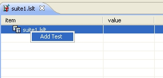
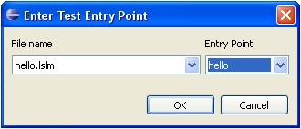
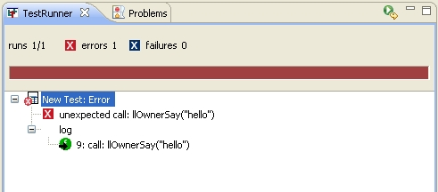
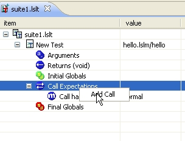
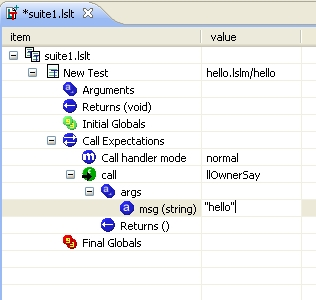

The LSLForge plugin can execute individual functions and handlers of your scripts an modules in unit tests. Unit tests are "written" by building a tree of tests within a test file. First, you must create a test file, which you do in a manner similar to creating a script file -- launching the appropriate wizard under the New popup menu. Tests automatically get the extension lslt - you don't have to specify it.
This what the initial test file looks like (a test suite with no tests in it):
The test editor is much different than the code editor. In essence it is a graphical XML editor, although you never see the XML. A test file defines a suite of tests. Each test tests a single LSL entry point (function or handler) by specifying the full path to the entry point (path to the module or script, plus path to the entry point within the source file. For a function, the path to the entry point within the source element is just the function name. For a handler it is the state name '.' the handler name, e.g. default.link_message), the arguments (if any) to the entry point, the expected return value (if applicable) or "don't care" if you you do not want the test to fail no matter what is returned. You can specify initial values of global variables (if you don't the default initialization will occur) and the expected final values of global variables, for those you care about.
Adding a test - first right click and select Add Test:
Then specify the entry point (using the combo boxes, which will allow you to pick any entry point in your code base):
This creates an initial test that looks something like:

This test will call the hello function in the hello.lslm module, and doesn't care what it returns (the value is blank -- which is good, because 'hello' has no return value). This test should always pass. Save it (Ctrl-S), and then run it:

We see that it passes, but if we drill down into the test results, we can see more of what happened:

The log shows that the function llOwnerSay was called with the argument "hello".
You can specify what LL functions you expect to be called, with what arguments, and what these functions should return. Note, you only specify calls to non-stateless LL functions. Stateless functions are those functions which always return the same result for a given set of arguments (examples of these are the mathematical function, list manipulation functions, string functions, etc.). These stateless functions don't interact with the SL environment in any way, and therefore behave as expected when called within your unit tests. But stateful function (there are lots of these -- prim/object manipulation functions, parcel functions, physics functions, etc.) behavior depends on the state of the environment; therefore, for the unit tests, you can specify exactly how they should behave within your tests by specifying what sequence of calls you expect, with what arguments, and can specify the return value (if applicable) for each particular expected call. There are several modes you can specify for these mock calls:
If we change the calls mode for the test we defined above to normal we no longer get a successful outcome:
The test fails because, since we aren't being 'nice', the call to llOwnerSay is unexpected, and causes the test to fail. We can then change our test to indicate we expect a call to llOwnerSay with the appropriate argument. First, use the context menu to add a call:
Then select the function you expect:

This adds the call to the call list, with expected arguments defaulted to "don't care" (the value field is blank). You can then edit the argument to tell it you expect it to be "hello".
Rerunning the test with this change will cause it to once again pass.
Regardless of the mode, when you specify a call (mock up a call) you can either pass in an actual parameter that you expect, or specify "don't care" (by clearing all text from the field); which will successfully match any argument.
When the test is run, the global variables are initialized and the code in the entry point is executed, with calls to external (non-stateless) LL functions handled as you specify in the test. The test may abort (fail) early (if an unexpected LL call is made), otherwise it runs to completion, at which point the strict/exhaust tests are made to see if all the correct function calls were made, the return value is tested to see if it matches expectations, and the final values of globals are tested against any expectations were set. The results are presented in a JUnit like format, with a progress bar advancing as the tests are run (turning to red when failures are encountered), and the test results presented in a tree. Part of the test results is a complete log of all LL functions that were called (both stateless, aka internal, functions, and non-stateless/external functions).
The editing is done via either right clicking to add new elements to the tree, or delete elements (such as new tests, or new calls in the list of expected calls), or by selecting the second column of a row and editing directly the value therein. You can also edit the name of the test suite and the name of each test. You can't edit the entry point for a test (e.g. hello.lslm/hello) or an expected call (e.g. 'llOwnerSay'). To change these you need to delete the test or call and then create a new test or call to replace it.
When specifying arguments and return values, and values of global variables (either initial or expected final), you can enter LSL expressions, e.g.:

These expressions can contain literal values and LL predefined constants (e.g. TRUE) combined with the usual operators. You can't call functions or refer to variables. This facility allows you to do things such as pass in mask values by oring together the appropriate LSL constants, rather than having to figure out what the actual value of those constants are, oring them together yourself, and typing the resulting value into your test.
The test editor now has full undo/redo support, just like the Sim Project Editor.